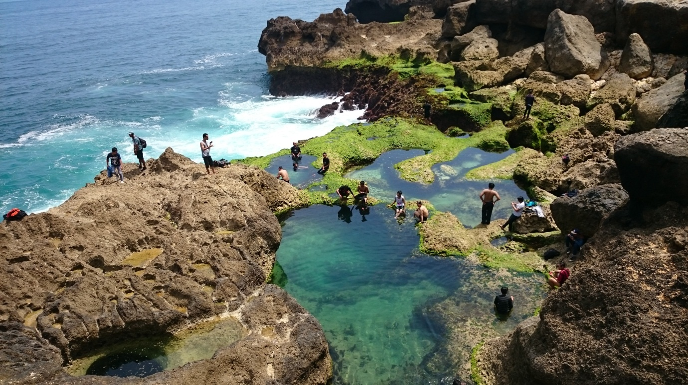
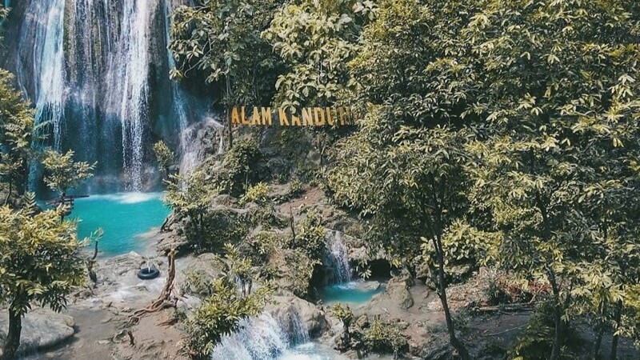
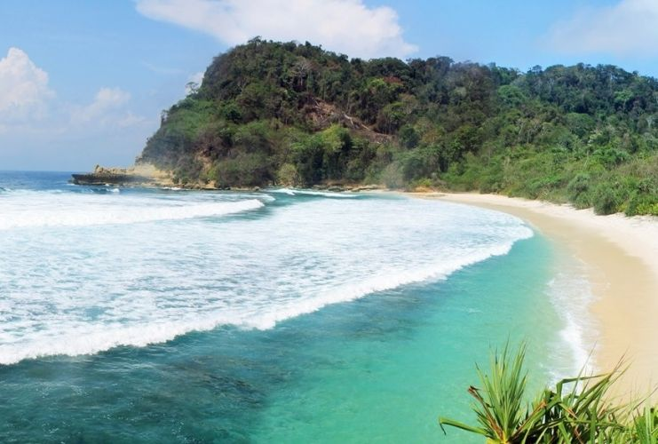
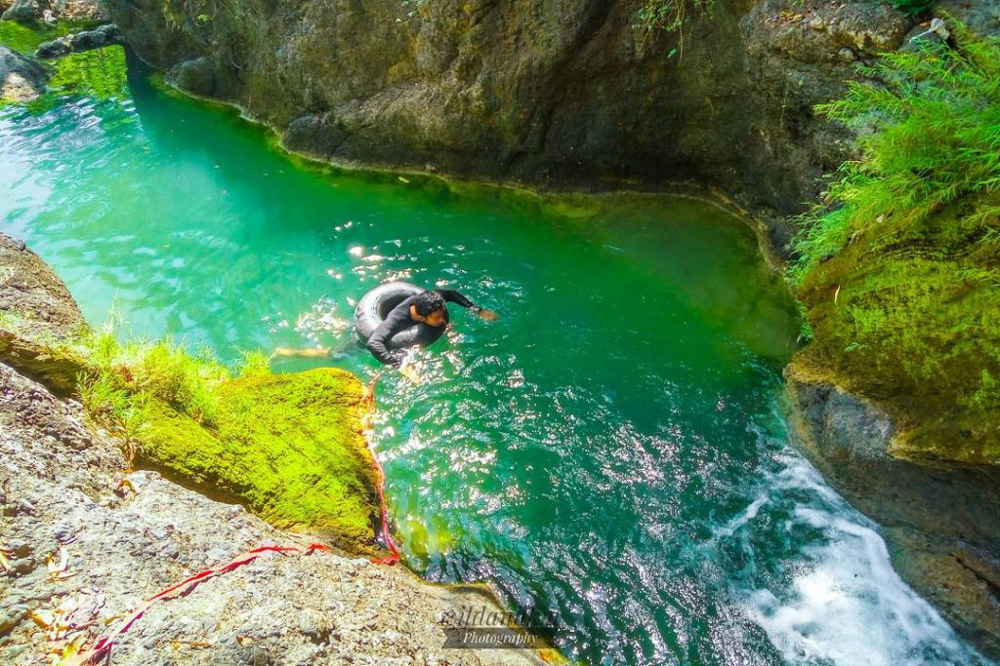
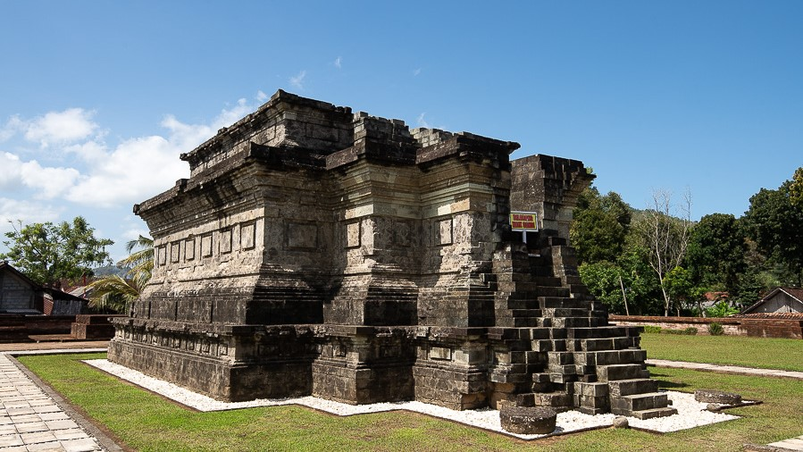
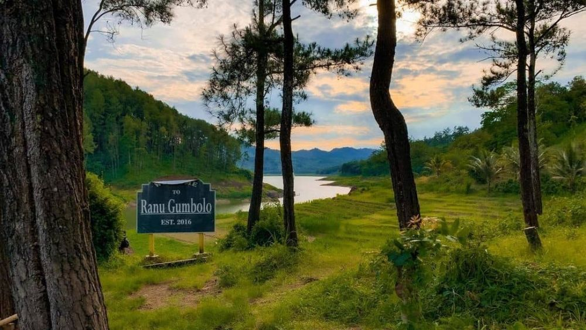

Come, enjoy the stunning natural beauty of Tulungagung! Experience an unforgettable adventure with us!

Kedung Tumpang Beach
A stunning beach known for its crystal-clear waters and beautiful rock formations. Perfect for swimming and sunbathing.

Alas Kandung Waterfall
A majestic waterfall surrounded by lush greenery, ideal for hiking and enjoying nature.

Coro Beach
A serene beach that offers breathtaking sunsets and tranquil waves. Great for relaxation.

Kedung Tritis
Known for its beautiful pools and clear waters, perfect for family outings and picnics.

Sanggrahan Temple
A historical temple that showcases traditional architecture and cultural significance in the region.

Ranu Gumbolo Leak
A beautiful lake known for its picturesque views, ideal for camping and outdoor activities.